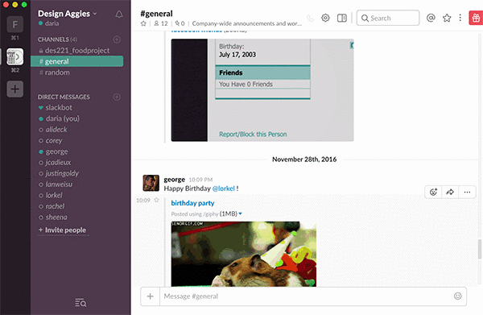

1/12/16
effective user interface design: slack
I don’t regularly use Slack anymore, but I appreciate it as a design that harkens back to basics, namely, the online chatroom. As a glorified chatroom and messaging system, it has a surprising breadth of purpose, both social and commercial. Slack makes use of color beautifully and cleanly, and, in the spirit of contemporary design, it is very simple aesthetically and easy to use. Slack’s use of color to create organization and hierarchy as well as a search bar (the modus operandi for most web-based applications these days) creates an intuitiveness in the same vein as the iPhone's messaging app. I have found Slack to be somewhat less useful for delegating tasks in a corporate setting, since it is not very robust in terms of manual organization. But I appreciate that the old school chatroom — like we found with AOL back in the day, or even Netscape web forums — is coming back into style in this format. It is one of my favorite things one can do on the web, is a great way to share your live brain stream in a manner that is not as high-pressure as a direct email or text message.